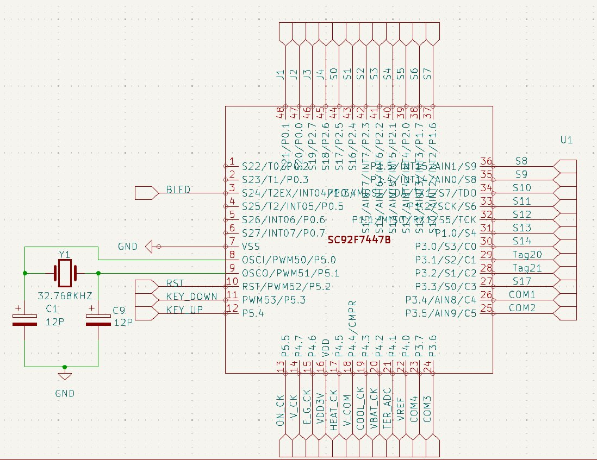
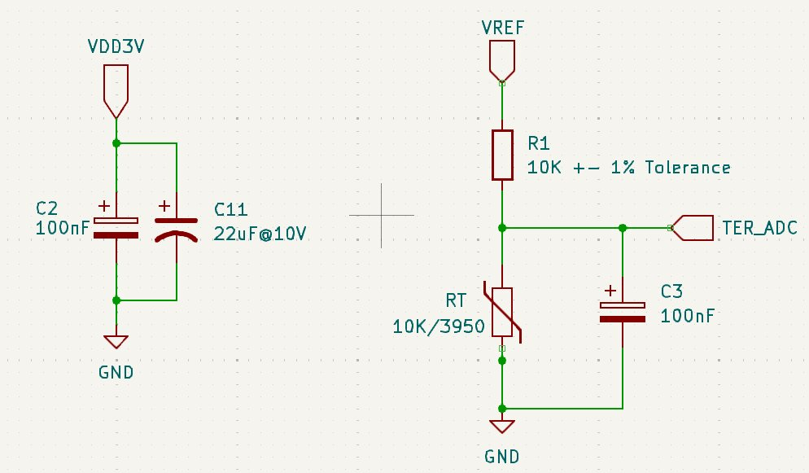
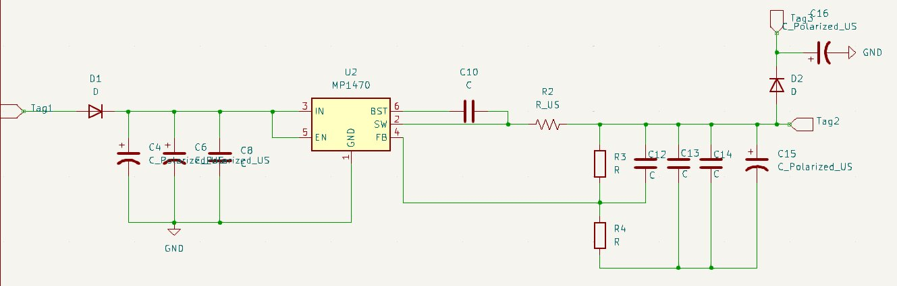

Industrial Thermostat PCB Design
Tasked with designing a two-layer industrial thermostat PCB with an LCD interface, working under real-world constraints including size, routing density, and long-term reliability requirements. The project required reverse engineering an existing reference board before building forward.
- Used soldering and board inspection to fully reverse engineer a reference thermostat PCB, mapping signal flow, power distribution, and component placement.
- Created complete schematic layout in KiCad, optimising trace routing, power planes, and signal integrity.
- Followed a structured workflow: prototyping → electrical validation → review → final layout, producing a manufacturable board that met all functional requirements.
- Collaborated with a partner throughout, splitting schematic capture and layout work.



Robotic Arm Housing Design
Participated in an extracurricular engineering club project to develop a robotic arm requiring a robust housing structure. Led the mechanical design of the housing, integrating it with the arm's electrical and mechanical subsystems under size, strength, and flexibility constraints.
- Led mechanical design of the robotic arm housing in AutoCAD, ensuring compatibility with all integrated electrical and mechanical subsystems.
- Collaborated closely with teammates responsible for electrical integration to align component placement, cable management routing, and mounting points.
- Researched and applied AutoCAD techniques to improve part manufacturing and performance.
Soft Robotic Bottle-Cap Gripper & Twister
Designed a hydraulically actuated soft robotic system to grip and twist a 28mm plastic bottle cap using only soft materials — no rigid motors or gears. The system consists of two independently actuated components: an inflatable ring gripper and a fibre-reinforced twisting actuator, both fabricated from Ecoflex 00-30 silicone.
- Evaluated three design concepts via weighted decision matrix (grip capability, torque generation, soft compliance, modelling feasibility, reliability) — selected Concept 2 scoring 4.15/5.
- Analytically modelled grip force (F = P × A) estimating 75–150 N at 30–60 kPa, and torque (τ = r·F·μ) exceeding the 0.3–0.6 Nm requirement; modelled twisting angle as θ = k·P showing linear pressure–rotation.
- Designed fabrication process: two-part 3D-printed silicone moulds for the ring gripper; nylon thread helically wrapped at ~40–45° fibre angle on cylindrical actuator to constrain radial expansion and induce torsional deformation under pressure.
- Specified materials (Ecoflex 00-30), assembly, watertight sealing requirements, and an independent dual pressurising system allowing grip and twist to be controlled separately.
- 3D simulation showed inability of ring gripper to efficiently grip due to insufficient surface area; twisting actuator rotation limited by available pressure — documented failure analysis.
Stacked Chevron Actuator — MEMS Displacement Study
Investigated whether stacking multiple tiers of chevron actuators in a MEMS device produces proportionally greater displacement than a single-layer standard chevron actuator fabricated using UBC's in-house 1.5-layer SU-8 photolithography process and physically tested in the lab.
- Designed the stacked chevron actuator layout using the in-house 1.5-layer SU-8 process, considering beam angles, anchor placement, and the thermal expansion mechanism driving displacement.
- Performed structural and thermal analysis calculating expected displacement as a function of stacking number (n) and applied current.
- Compared single-stack vs. multi-stack output displacement, documenting failure modes, fabrication deviations, and the relationship between design parameters and measured performance.
- Produced a final documentation package including design analysis and test plan with labelled results and lessons learned.


Transcatheter Heart Valve — Engineering Analysis Report
Authored a comprehensive engineering report on transcatheter heart valve (THV) design, covering the biomechanics of the native aortic valve, engineering design requirements for TAVR/TMVR systems, device architecture and materials, deployment mechanics, failure modes, and future directions.
- Modelled native aortic valve biomechanics: calculated membrane stress (σ = Pr/t ≈ 400 kPa at 120 mmHg) across 35M cycles/year; quantified pressure gradients using ΔP ≈ 4v² and turbulence thresholds in diseased conditions such as aortic stenosis.
- Analysed frame material trade-offs (Nitinol vs. Cobalt-Chromium): shape memory vs. balloon-expandable deployment, radial force magnitude, flexibility, and anatomical conformity → relating material selection to clinical outcomes.
- Compared TAVR and TMVR engineering challenges — TAVR's tubular root compatibility vs. TMVR's 3D saddle annulus geometry and LVOT obstruction risk.
- Identified root causes of clinical complications; proposed patient-specific 3D-printed geometries, bioresorbable frames, and adaptive delivery systems as solutions.